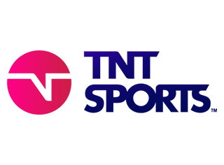

Apurogol
Ver Apurogol - partidos de fútbol en vivo
En Apurogol, encontrarás una amplia cobertura de los eventos más importantes y destacados del fútbol tanto sudamericano como internacional.
Canales de transmisión de fútbol en vivo:
TNT Sports
TNT Sports, canal premium deportivo, que transmite la Liga Profesional Argentina.
DAZN
DAZN servicio que incluye los canales DAZN 1 y 2 en Español y Alemán, así como también DAZN LaLiga en Español.
En Apurogol, encontrarás una amplia cobertura de los eventos más importantes y destacados del fútbol tanto sudamericano como internacional. Podrás disfrutar de partidos en vivo y en directo, incluyendo competiciones como la Liga de Campeones de la UEFA, la Copa Libertadores de América, la Liga de Fútbol de Argentina, la Liga de Fútbol de España y muchas más. Además, podrás acceder a una amplia variedad de contenido relacionado con el fútbol, como entrevistas, análisis, noticias y mucho más. Con Apurogol, tendrás acceso a un fútbol sin restricciones y libre para todos, permitiéndote disfrutar de tus partidos favoritos y de todo lo que rodea al mundo del fútbol.
Preguntas frecuentes
¿Qué es Apurogol?
Apurogol es un sitio web que ofrece canales de transmisión en vivo y en directo de partidos de fútbol argentino, así como la Copa Sudamericana, la Copa Libertadores, partidos de Boca Juniors y River Plate, la Selección Argentina y más.
¿Cómo ver un partido en vivo y en directo?
Para ver un partido en vivo y en directo en Apurogol, primero debes ingresar al sitio web y seleccionar el canal que deseas ver en la agenda diaria o simplemente ingresar al canal que está transmitiendo el partido en el momento del encuentro..
¿Cómo ver los partidos en vivo desde una computadora o un dispositivo móvil?
Para ver los partidos en vivo desde una computadora o un dispositivo móvil, solo debes ingresar al sitio web en un navegador o descargar la aplicación compatible con Android o iOS de Apurogol y elegir el canal que deseas ver en directo.
¿Qué partidos de fútbol se transmiten en el sitio?
En Apurogol se pueden ver partidos de fútbol argentino, incluidos aquellos de Boca Juniors y River Plate en el campeonato argentino, la Copa Libertadores y la Copa Sudamericana.